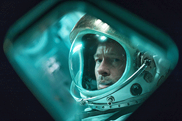

|
シネマサンシャインメールマガジン 2019/9/13号【グランドシネマサンシャイン版】 |
|
毎月15日はシネマサンシャインデー
どなたさまでも1,200円でご鑑賞いただけます。 次回は明後日9/15（日）です！ ※3D、4DX、IMAX、ATMOS、dts-x、ScreenX、BESTIAは別途追加料金が必要となります。 |
オススメ作品
『記憶にございません！』
9/13（金）公開
© 2019フジテレビ 東宝
三谷幸喜の長編映画監督8作目、記憶をなくした総理大臣が主人公の政界コメディ。 国民からは史上最悪のダメ総理と呼ばれた総理大臣の黒田啓介は、演説中に一般市民の投げた石が頭にあたり、一切の記憶をなくしてしまう。 他国首脳、政界のライバル、官邸スタッフ、マスコミ、家族、国民を巻き込んで、記憶を失った男が、捨て身で自らの夢と理想を取り戻す！果たしてその先に待っていたものとは…！？
監督：三谷幸喜
出演：中井貴一、ディーン・フジオカ、石田ゆり子、草刈正雄、佐藤浩市、小池栄子、斉藤由貴、木村佳乃、吉田羊、山口崇、田中圭、梶原善、寺島進
出演：中井貴一、ディーン・フジオカ、石田ゆり子、草刈正雄、佐藤浩市、小池栄子、斉藤由貴、木村佳乃、吉田羊、山口崇、田中圭、梶原善、寺島進
『アド・アストラ』
9/20（金）公開

©2019 Twentieth Century Fox Film Corporation
ブラッド・ピット主演、衝撃の”救出”ミッションを描く壮大なスペース・アドベンチャー大作。 ロイ・マグブライドは地球外知的生命体を探求に人生を捧げた英雄の父を見て育ち、自身も宇宙士の仕事を選んだ。 しかし、その父は地球外生命体の探索に出た船に乗ってから16年後、32億キロ離れた太陽系の彼方で行方不明となった。 だが、父は生きていた──。 父の謎を追い、宇宙の彼方で息子が見たものとは？
監督：ジェームズ・グレイ
出演：ブラッド・ピット、トミー・リー・ジョーンズ、ルース・ネッガ、リヴ・タイラー、ドナルド・サザーランド
出演：ブラッド・ピット、トミー・リー・ジョーンズ、ルース・ネッガ、リヴ・タイラー、ドナルド・サザーランド
上映作品


ニュース
○シネマサンシャイン「おやこシネマ」開催決定
子育て中のママ、パパがお子さま連れで一緒に映画を鑑賞できる上映会を開催いたします。
小さいお子さま連れでの映画鑑賞は…
「びっくりして泣いてしまったら…」
「暗いので子供が怖がるかも…」
「子供がおしゃべりしたり歩き回るかも…」
そんな不安や心配がつきないママ、パパの為の上映会です。
音量が通常よりも小さめで、照明も明るめに設定されており、
小さなお子様でも怖がることなくご鑑賞いただけます。
今後の実施は下記となります。
9月24日(火)『ライオン・キング』

小さいお子さま連れでの映画鑑賞は…
「びっくりして泣いてしまったら…」
「暗いので子供が怖がるかも…」
「子供がおしゃべりしたり歩き回るかも…」
そんな不安や心配がつきないママ、パパの為の上映会です。
音量が通常よりも小さめで、照明も明るめに設定されており、
小さなお子様でも怖がることなくご鑑賞いただけます。
今後の実施は下記となります。
9月24日(火)『ライオン・キング』
○シネマサンシャインの新しい会員サービス『シネマサンシャイン リワード』スタート！
もっともっとオトクに映画を観よう！６ポイントで１回鑑賞無料！毎週木曜は1,100円鑑賞などお得なサービスがいっぱいです！シネマサンシャインアプリから新しい会員サービスへ登録いただけます。 是非ご登録ください。
全劇場で対応開始！
※年会費500円あり
全劇場で対応開始！
※年会費500円あり

○メルマガ会員限定割引クーポンプレゼント！
メルマガ会員様限定でお得な割引クーポンをプレゼント！
以下の画面をチケット購入時にご提示ください。
PCでご覧のお客様は該当部分を印刷してご提示ください。

以下の画面をチケット購入時にご提示ください。
PCでご覧のお客様は該当部分を印刷してご提示ください。
※有効期限は10月11日までになります。
※割引券1枚で2名様まで有効。 他の割引サービスとの併用はできません。
※特別興行などご利用いただけない場合がございます。
※インターネット購入（e-box、ムビチケ)ではご利用いただけません。
※期間中何回でもご利用頂けます。
池袋、ユーカリが丘、大和郡山、北島、下関、姶良の自動券売機では下記QRをご利用ください。
【一般・大学生】

【高校生以下】
【一般・大学生】
【高校生以下】
ムービークイズ
○前回のクイズ
『ロケットマン』でエルトン・ジョンを演じ、歌唱も披露するタロン・エガートンですが、ある作品でもエルトン・ジョンの楽曲を歌唱しています。 その作品とはなんでしょう。
『ロケットマン』でエルトン・ジョンを演じ、歌唱も披露するタロン・エガートンですが、ある作品でもエルトン・ジョンの楽曲を歌唱しています。 その作品とはなんでしょう。
答え：『SING/シング』
ゴリラのジョニー役でエルトンの楽曲「I'm still standing」を歌唱。
ゴリラのジョニー役でエルトンの楽曲「I'm still standing」を歌唱。
○今回のクイズ
『アド・アストラ』の監督ジェームズ・グレイの監督デビュー作品『リトル・オデッサ』に出演し、11/8公開『ターミネーター:ニュー・フェイト』でリンダ・ハミルトンとともに久しぶりにターミネーター作品に出演する人は誰でしょう。
『アド・アストラ』の監督ジェームズ・グレイの監督デビュー作品『リトル・オデッサ』に出演し、11/8公開『ターミネーター:ニュー・フェイト』でリンダ・ハミルトンとともに久しぶりにターミネーター作品に出演する人は誰でしょう。
答えは、次回のシネマサンシャインメールマガジンで！